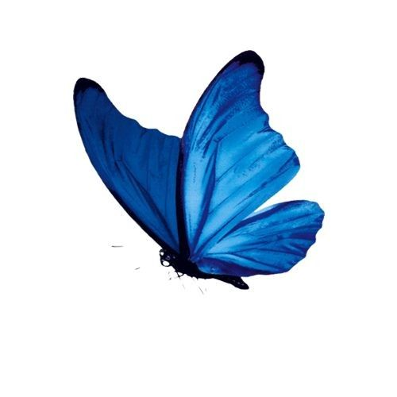

Знаешь... Я хочу, чтобы ты точно запомнила этот день.
Мне все приходят и приходят идеи, и я стараюсь максимум
из них сделать
*Уже 1:25, а я после ночной 10 часовой смены...
Но я сижу, и делаю рабочий проект, и сюрприз для своей девушке
(Тут ты можешь увидеть 1 запись, которая так и не попала в коробку)
Тут я не буду что-то придумывать, или говорить на
какую-то тему. Тут я хочу просто показать/сказать/что я думал, и как это делал.
Я даже не буду придумывать супер дизайн.
Просто делаю это под "рандом" музыку, и получаю от этого удовольствие.
Скорей всего это я делаю, как подведение итогов нашей встречи.
Сейчас я сижу в очень расслабленном состоянии.
Пролетают очень много воспоминаний, а я сижу, и как-то спокойно.
Может это из-за того, что я иду на 2 сутки не спать?
*Нужно сделать адаптацию. Чтобы ты смогла это нормально посмотреть
с телефона, и не было это так, когда подавала электронно документы
в Мосвку через сайт, где он в бок поехал.
- У меня нет на это время.
3:00. Я так засиживаюсь, потому что не только делаю тебе подарок.
Но еще и рабочий. Но с ним ладно, я почти все там сделал. Доделаю днем.
Можно еще посидеть поделать тебе этот сайт, да и придумать, что еще можно
положить в коробку.
А еще... я хотел еще что-то в письмах написать. Но я что-то потерял мысли.
Утром продолжу
Лиз... я люблю тебя.
С 1 стороны я сижу, и думаю, что "Бля... мало сделал",
а со 2 стороны думаю, что я очень много чего сделал. Я:
* Придумал этот план очень давно
* Запомнил, как ты сказала, что хотела бы тут быть ночью, когда
горят огни
* Собрал подарок
* Купил цветы
* Вызвал тебе такси
* Забронировал стол
* В самом подаркет там много отсылок к чему это было
* Я ахуел. Я думал эти киндер будут там под 30р стоить,
а они по 104р. Купил киндер
* Помнил, что ты хотела сходить в то заведение рядом с кассами.
Сводил тебя туда
"Лиза, я лишь хочу признаваться тебе
Что я с детства влюблён, дать тепло батарей
Холод осени с Лизой заменим весной
Майский парк, на скамейках сидим мы с тобой
Она мне говорит, как отлично, что я
Ей сказал, что взаимности толком не ждал
Просто у меня есть уже план в голове
Ведь с четвёртого класса я думал о ней"
"Лиза, я лишь хочу признаваться тебе
Что я с детства влюблён, дать тепло батарей
Холод осени с Лизой заменим весной
Майский парк, на скамейках сидим мы с тобой
Она мне говорит, как отлично, что я
Ей сказал, что взаимности толком не ждал
Просто у меня есть уже план в голове
Ведь с четвёртого класса я думал о ней"

Я ХОЧУ
ЧТОБЫ ТЫ БЫЛА
СЧАСТЛИВА
СО МНОЙ
Как-то...
Все само идет
Сравнение 2 вариантов листов.
Мне как-то 1 вариант даже больше нравится. Так много
пространства задают свою идею
*Случайно наткнулся на это,
и как раз еще одно сопостовление 2 видов
Иду по городу, руки в
порванных карманах
Я ухвачусь за всё, за что могу
цепляться, мама (Ухвачусь)
И без косых взглядов, ведь не
существует кармы (Нет)
Уйду с добром, но в анкете
Богу не хватит данных (Не хватит)
А мне не хватит мотивации
Я сколько тут живу и всё
пытаюсь цепляться
Тщетно за людей и мне не
заслужить оваций
Со мной что-то не так, но я
не буду исправляться
Шаткие ноги ступают на порог
своих обителей
Надеюсь, что их сучьи лица
меня не увидели
У меня шесть слов, чтобы
духовно распять (Шесть, шесть)
Закрываю окна, выключаю
свет, ложусь в кровать (Спать)
А-а-а, и кошмары не
отпускают
Я вижу людей с прошлого, они
никем не станут
Держи меня за руку, провожай
меня глазами
*Подходит к тому времени
Но... Теперь это совсем друегое. У меня
есть самое
прекрасное из-за чего я изменился. И теперь я вижу только это:
Теперь я представляю свою
жизнь так.
Я хочу, в этой жизни была ты.
Лиза, будь со мной
Нужно уже закругляться,
хотя сложно, потому что идеи все идут и идут.
И я хочу прям максимум сделать........
Уже почти 5.......
Я кстати случайно, как-то вспомнил про
лоток с яйцами. Записать туда киндер. Я думаю, что это
будет необычно:
"Ты открываешь коробку, и там видешь коробку для яиц.
Это из серии. Купил ей гречку, чтобы самому поесть"
Нужно уже закругляться.
Уже 6 число. Наша встреча с тобой, а мне еще нужно сделать друегое,
и нужно заканчивать это.
Я не успел подвести мысли в письмах.
*И сокрей всего, этот сайт у тебя будет работать не правильно
потмоу что я сейчас делаю на своих "дюймах" монитора, и время на адаптацию у меня нет.
и мне кажется, что твой монитор не поддерживает на чем я сего создал.
Поэтому нужно что-то придумать
Я прям сделал это встречу больших маштабов.
(шикарный парень)
И делалось это все для 1 шикарной девушки, которую
я люблю... и хочу чтобы она всегда была рядом.
Лиз, ты мне очень дорога.
Я хочу, чтобы ты была искренна со мной,
и я никогда не хочу тебя терять.
ТЫ
ПОСТОЯННО В
МОЕЙ
ГОЛОВЕ

Создано для самой любимой девушки от:
@fkskrrkdjs
L...?